Zaintza Dorrearen Azterketa nola prestatu eta garaiz zuzendu
4.0 bertsioa · 2026ko azaroa
⚠ Bi ohar garrantzitsu
Zuzendu beti jatorrizko argitalpenarekin. Aplikazioak paragrafoak eta galderak erakusten baditu ere, denborak kalkulatzeko bakarrik egiten du. Zuzentzen duenak ez du inoiz tenporizadorean agertzen den edukia jarraitu behar: entzuleei informazioa aurkezteko, erabili beti JW Library aplikazioa edo Zaintza Dorrea aldizkari inprimatua.
Azterketan zehar, erabili aurkezpen modua. Zuzentzen ari zarenean tenporizadorea erabiltzeko modu gomendatua da, distrakzioak saihesten dituelako: behar dena bakarrik erakusten du, berdea, horia eta gorria koloreekin denboraz nola zoazen begirada batean jakiteko, eta botoi handi eta erraz sakatzekoekin hurrengo paragrafora pasatzeko eta iruzkinak markatzeko (9. atala).
Azterketaren Tenporizadoreak Zaintza Dorrearen Azterketa zuzentzen duen anaiari laguntzen dio denbora ondo banatzen eta garaiz amaitzen.
Asteko artikulua PDFan kargatzen duzu, eta aplikazioak:
Artikulua irakurtzen du eta paragrafoak, galderak, irakurri beharreko testuak, irudiak, oharrak eta errepasorako galderak aurkitzen ditu.
Atal bakoitzari zenbat denbora eman kalkulatzen du: sarrera, paragrafo bakoitza, errepasoa eta amaiera.
Azterketan zehar gidatzen zaitu paragrafo bakoitzeko kronometro batekin eta garaiz, luzapenean edo denboraz pasatuta zoazen adierazten duten koloreekin.
Berez berregokitzen da: paragrafo bat luzatzen bada, geratzen den denbora hurrengoen artean banatzen du, garaiz amai dezazun.
Aplikazio ez-ofiziala. Doako proiektu independentea da. Ez da argitalpen ofiziala, eta ez du loturarik jw.org-ekin ezta Jehobaren Lekukoen erakundearekin ere. Artikulua zure gailuan bertan aztertzen da: ez da inongo zerbitzarira bidaltzen ezta bertan gordetzen ere.
Eskuliburu honetako irudiek asmatutako adibide-artikulu bat erabiltzen dute, ez Zaintza Dorreko benetako artikulu bat.
2Aplikazioa instalatu
Aplikazioaren ikonoa liburu laranja bat da, kolore-adierazle batekin (berdea, horia eta gorria), atzealde beltzean.
Ikonoa
Android mugikorra edo tableta
Ireki Google Play.
Bilatu «Temporizador Estudio Atalaya», edo ireki esteka hau: ireki Google Play-n.
Sakatu Instalatu.
Aplikazioa Android batean nabigatzailetik erabiltzen baduzu jada, hasierako pantailan «Android erabiltzen duzu?» txartel berdea ikusiko duzu, «Ireki Google Play-n» botoiarekin.
iPhone eta iPad
Oraindik ez dago App Store-n, baina webetik berdin funtzionatzen du:
Sakatu Partekatu botoia (gorantz begira dagoen gezia duen karratua).
Aukeratu «Gehitu hasierako pantailan» eta sakatu Gehitu. Ikonoa zure pantailan agertuko da.
Ordenagailua
Ireki temporizador-estudio.vercel.app Chrome-n edo Edge-n. Nahi baduzu, instalatu programa gisa helbide-barrako instalatzeko ikonoarekin.
Eguneraketak: bertsio berri bat dagoenean, «Aplikazioaren bertsio berri bat dago eskuragarri» abisua agertzen da. Sakatu Eguneratu. Ez da inoiz berez eguneratzen azterketa baten erdian.
3Hasierako pantaila
Aplikazioa irekitzean ikusten duzun lehen gauza da. Irudiko zenbaki gorriek gauza bakoitza non dagoen adierazten dizute.
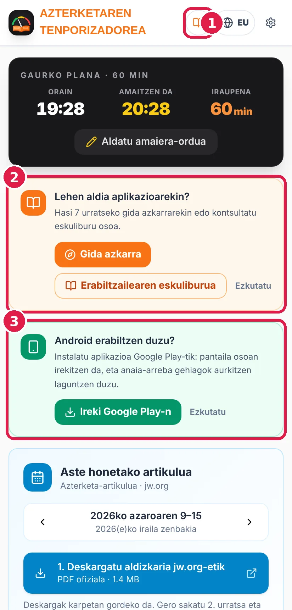
Hasierako pantaila.
Liburuaren botoia: eskuliburu hau edozein unetan irekitzen du.
«Lehen aldia aplikazioarekin?»:gida azkarra edo eskuliburua irekitzen du. Aplikazioa ezagutzen duzunean, sakatu Ezkutatu.
«Android erabiltzen duzu?» (nabigatzailea erabiltzen duten Android mugikorretan bakarrik): instalatu aplikazioa Google Play-tik. Hau ere ezkuta daiteke.
Beherago hauek aurkituko dituzu:
Gaurko plana: uneko ordua, azterketa amaitzen den ordua eta haren iraupena.
Aste honetako artikulua: aldizkaria deskargatu eta irekitzeko (4. atala).
Azterketaren ezarpenak: zure konfigurazioaren laburpena, Aldatu estekarekin.
Amaieran, pribatutasunerako, eskulibururako, Google Play-rako eta azterketen historiarako estekak.
Goian daude, halaber, hizkuntza (EU) eta ezarpenak⚙.
4Asteko artikulua kargatu
«Aste honetako artikulua» txartelak uneko astea erakusten du (adibidez, 2026ko azaroaren 9–15) eta hura duen Zaintza Dorrearen zenbakia. ‹› geziekin beste aste bat aukera dezakezu.
«1. Deskargatu aldizkaria jw.org-etik» botoiak dagokion zenbakiaren PDF ofiziala irekitzen du. Android-en Deskargak karpetan gordetzen da; iPhone-n, sakatu Partekatu → «Gorde Fitxategiak-en».
«2. Aukeratu deskargatutako PDFa»: hautatu fitxategi hori. Aplikazioak aukeratutako asteko artikulua bilatzen du aldizkariaren barruan eta aztertu egiten du. 1. urratsa sakatu ondoren, aplikaziora itzultzean botoi hau berde jartzen da («Deskargatu da jada? Sakatu hemen irekitzeko»): ukitu bat nahikoa da.
Zaintza Dorrea aplikazioaren hizkuntzan deskargatzen da. Aplikazioa euskaraz badago, euskarazko edizioa deskargatzen da; gaztelaniaz badago, gaztelaniazko edizioa, eta horrela hizkuntza guztiekin. Beste hizkuntza batean deskargatzeko, aldatu lehenik aplikazioaren hizkuntza (14. atala). Portugesez, Portugalgo edo Brasilgo edizioa deskargatzen da, aukeratu duzunaren arabera.
Aplikazioak aldizkariaren kopia bat gordetzen du. Zenbaki bereko hurrengo asteak zuzenean irekitzen dira «Ireki aste honetako artikulua» botoiarekin, ezer berriro deskargatu gabe. Gordetako aldizkariak beren azken astetik 3 hilabetera berez ezabatzen dira.
Ordenagailuan, PDFa hasierako pantailako edozein lekutara arrastatu dezakezu («Askatu hemen PDFa» abisua agertzen da) edo aldizkariak gordetzen dituzun karpeta aukeratu, eta aplikazioak berak aurkituko ditu.
Aldizkaria oraindik argitaratu gabe dagoela dio? jw.org-ek zenbaki bakoitza aste batzuk lehenago argitaratzen du. Oso urrun dagoen aste bat aukeratzen baduzu, baliteke oraindik eskuragarri ez egotea.
5Azterketaren laburpena eta plana
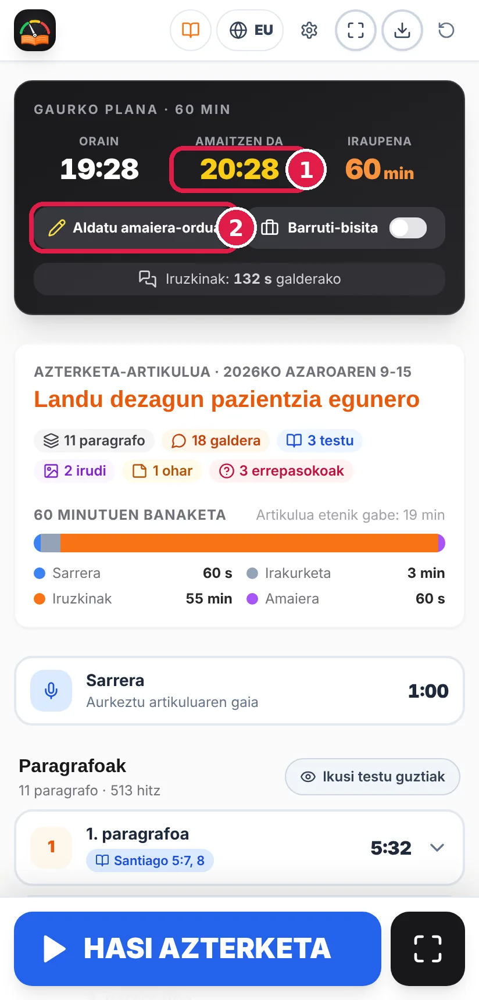
Gaurko plana.
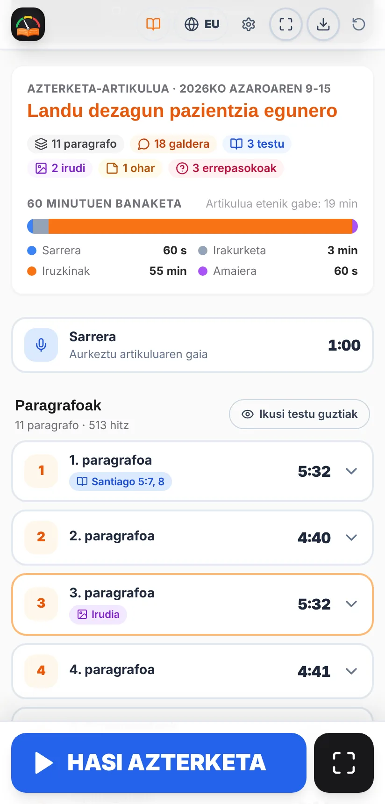
Artikuluaren laburpena.
Amaiera-ordua: azterketa amaitzen den ordua.
«Aldatu amaiera-ordua»: erabili hitzaldi publikoa berandu amaitzen denean (ikusi beheko koadroa).
Noiz aldatu amaiera-ordua? Bilerak ordubete eta 45 minutu irauten du: kanta eta otoitza (5 min), hitzaldi publikoa (30 min), kanta (5 min), Zaintza Dorrearen azterketa (60 min) eta azken kanta eta otoitza (5 min).
Hitzaldia berandu amaitzen bada, minutu horiek Zaintza Dorreari kentzen zaizkio. Azterketa hasi aurretik, sakatu «Aldatu amaiera-ordua» eta idatzi azterketak amaitu behar duen ordua, bilera garaiz amai dadin (amaiera baino 5 minutu lehenago, kantarako eta otoitzerako). Dena berriro kalkulatzen da ordu horretan amaitzeko.
Hitzaldia garaiz edo lehenago amaitzen bada, ez aldatu ezer: azterketak bere 60 minutuak irauten ditu, eta bilera pixka bat lehenago amai daiteke, baina inoiz ez beranduago. Horregatik, aplikazioak ez du inoiz azterketa konfiguratutakoa baino gehiago luzatzen.
Azpian, artikuluaren laburpenak hau erakusten du:
Izenburua eta astea.
Zenbat paragrafo, galdera, testu, irudi eta ohar dituen.
Denboraren banaketa erakusten duen kolore-barra: SarreraIrakurketaIruzkinakAmaiera.
Planean «Iruzkinak: X s galderako» ere ikusiko duzu: galdera bakoitzari erantzuteko batez besteko denbora.
Artikulua aukeratutako denboran sartzen ez bada, «Ez da sartzen» abisua agertzen da. Iraupena luza dezakezu edo irakurketa azkarragoa aukeratu Ezarpenetan.
6Paragrafoen zerrenda
Paragrafo bakoitza lerro batean agertzen da, bere zenbakiarekin eta aurreikusitako denborarekin. Sakatu paragrafo bat irekitzeko.
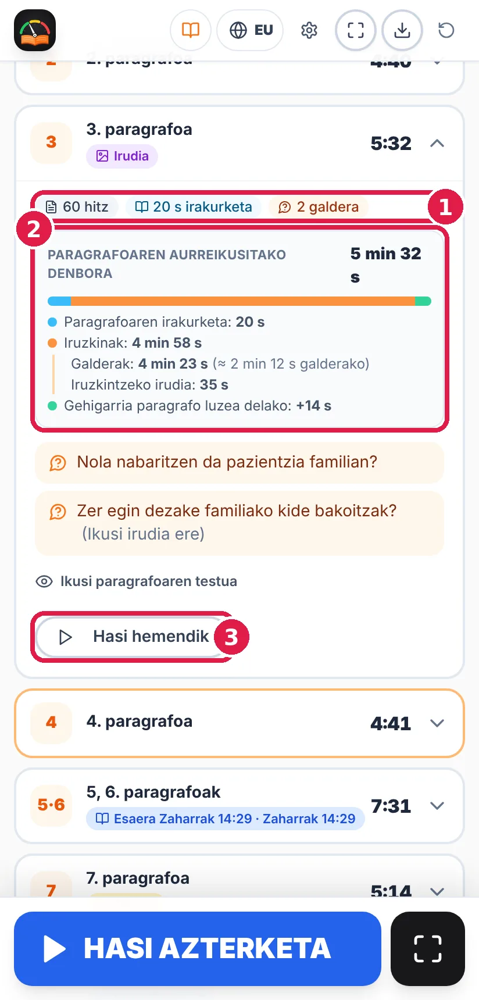
Paragrafo ireki bat.
Paragrafoaren datuak, bakoitza bere kolorearekin: hitzak (grisa), irakurketa-denbora (urdina) eta galderak (laranja). Azterketan zehar aurreikusitako ordua ere agertzen da (morea).
Paragrafoaren aurreikusitako denbora: guztizkoa eta nola banatzen den. Barrak paragrafoaren irakurketa (urdina), iruzkinak (laranja) eta, paragrafo luzeetan, iruzkin gehiagotarako gehigarri bat (berdea) erakusten ditu. Irakurtzeko testu bat, irudi bat edo ohar bat badago, entzuleek iruzkintzen dute: iruzkinen barruan agertzen dira, galderen azpian (adibidez «Irakurtzeko testua: 35 s»). Atalen batura guztizkoa da.
«Hasi hemendik»: azterketa hasita badago (adibidez, berandu iristen bazara), paragrafo honetara salto egiten du.
Kolore-etiketek kontuan hartu beharrekoa adierazten dute:
Etiketa
Zer esan nahi du
Santiago 5:7, 8
Irakurtzeko Bibliako testu bat dago.
Irudia
Galderak artikuluko irudi bati buruz hitz egiten du.
Oharra
Iruzkintzeko ohar bat dago.
★ Ideia garrantzitsua
Galderak koadro bat edo komatxo arteko ideia bat aipatzen du.
«Ikusi paragrafoaren testua» botoiarekin testua irakur dezakezu denborak prestatzeko. Zuzentzeko, erabili beti jatorrizko argitalpena.
Galdera bera duten paragrafoak (adibidez, «5, 6») elkarrekin doaz, eta Hurrengoa botoiak talde osoa saltatzen du.
7Azterketa urratsez urrats zuzendu
Gomendatua: azterketan zehar erabili aurkezpen modua (9. atala). Hemen nola funtzionatzen duen azaltzen da; berdina da bi ikuspegietan.
Mugikorrean, botoi nagusiak beti behean daude:
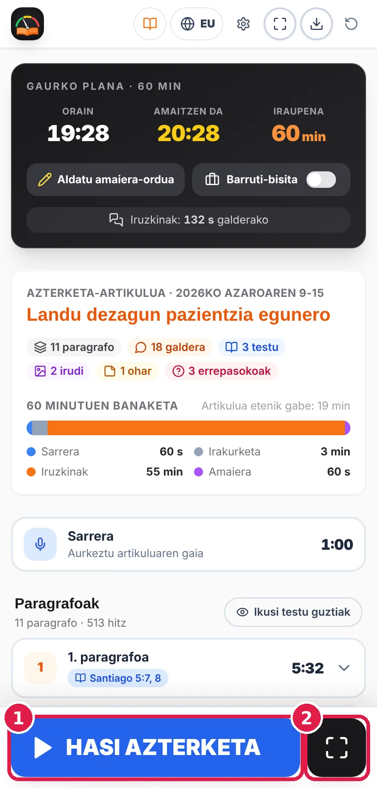
Hasi aurretik.
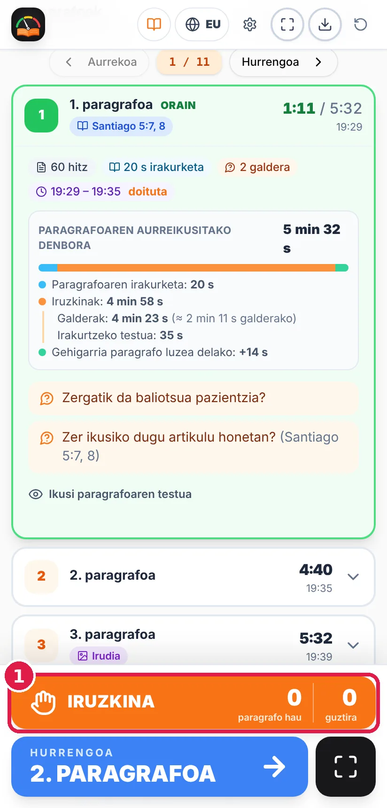
Paragrafo batean.
Botoi urdin handia: ondoren zer datorren esaten dizu. Sakatu beste atal batera pasatzen zaren bakoitzean: Hasi azterketa → 1. paragrafoa → 2. paragrafoa → … → Errepasoa → Amaiera → Amaitu azterketa.
Botoi beltza⛶: aurkezpen modua irekitzen du.
Paragrafoetan zehar ✋ IRUZKINA botoi laranja ere agertzen da: sakatu norbaitek iruzkin bat egiten duen bakoitzean. Amaieran zenbat iruzkin egon diren ikusiko duzu.
Sarrera. Sakatu «Hasi azterketa». Kronometro orokorra eta sarrerakoa hasten dira.
Paragrafoak. Sakatu Hurrengoa paragrafo bakoitza hastean. Aurreikusitakoaren gainean daraman denbora ikusiko duzu (adibidez, 1:11 / 5:43) eta kolorea (8. atala).
Errepasorako galderak. Azken paragrafoaren ondoren amaierako koadroko galderak datoz.
Amaiera. Amaiera-ordura arte geratzen den denbora zehatza irauten du: denbora soberan badago, dena aprobetxatzen du, Ezarpenetako minutua baino gehiago izan arren, eta gutxiago geratzen bada, laburtu egiten da. Amaiera-ordua igarotzen bada, gorri jartzen da.
Amaitu azterketa. Kronometroa gelditzen da eta azterketaren txostena gordetzen da (15. atala).
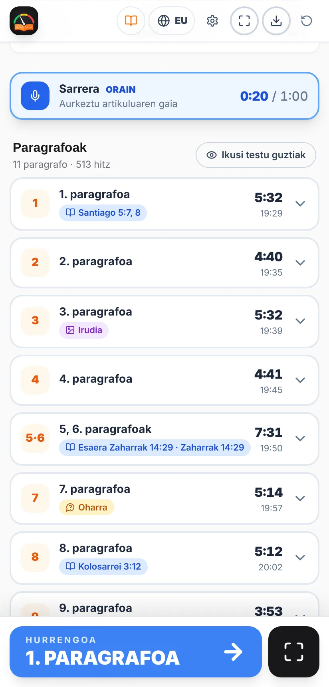
Sarrera martxan.
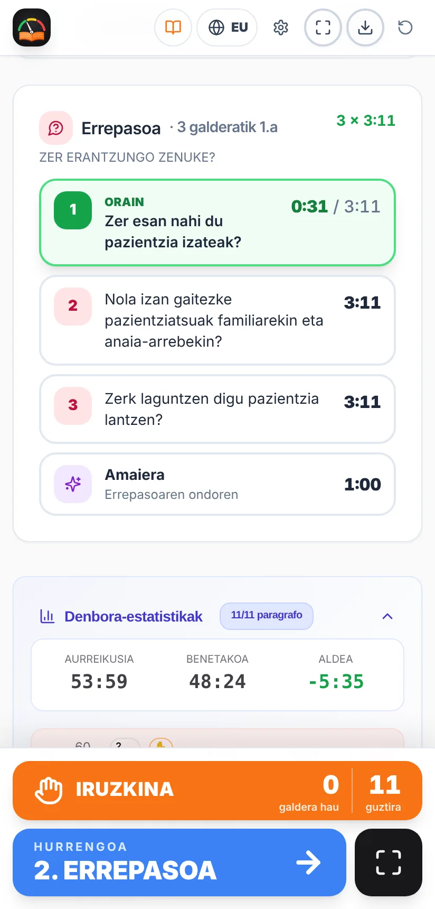
Errepasorako galderak.
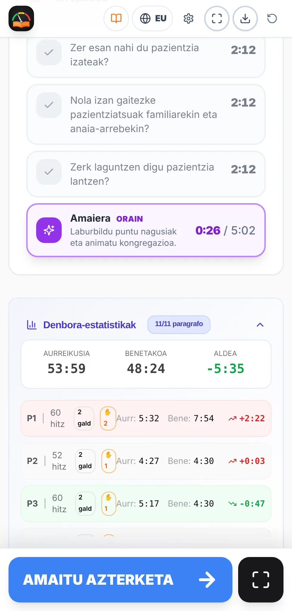
Amaiera.
Planeko ⏸ botoiarekin kronometroa pausatu dezakezu etenaldi bat badago. Pausan, martxan dagoen atalaren erlojua gelditzen da, baina amaiera-ordua ez da mugitzen: geratzen den denborak jaisten jarraitzen du, bilera bere orduan amaitzen delako.
8Koloreak: berdea, horia eta gorria
Martxan dagoenaren txartelak (paragrafoa, sarrera, errepaso-galdera edo amaiera) kolorea aldatzen du daraman denboraren arabera:
Kolorea
Noiz
Zer egin
GARAIZ
Aurreikusitako denbora arte.
Dena ondo: jarraitu horrela.
LUZAPENA
Bere denbora gainditu du, baina ez % 30 baino gehiago.
Hasi iruzkinak ixten.
GAINDITUTA
Aurreikusitakoa baino % 30 gehiago baino gehiago.
Pasa hurrengo paragrafora.
Garaiz.
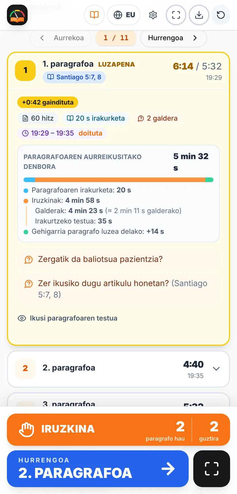
Luzapena, gainditutako denborarekin.
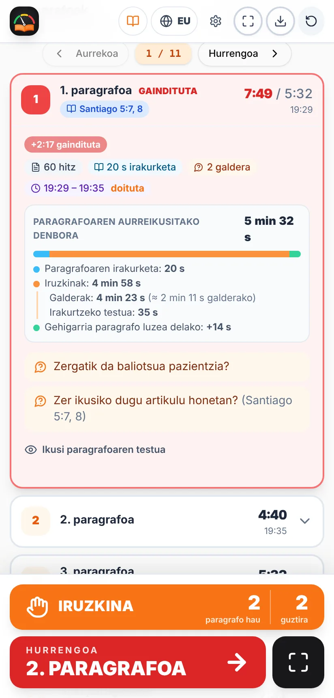
Gaindituta.
Azterketaren azken 5 minutuetan paragrafoek eta errepaso-galderek ez dute luzapenik: berdetik gorrira pasatzen dira zuzenean, amaierako denbora ez jateko. Amaierak beti mantentzen du bere luzapena.
Zati bat luzatzen bada, ez da ezer gertatzen: Hurrengoa sakatzean, aplikazioak geratzen den denbora falta denaren artean banatzen du berriro, garaiz amaitzeko.
«Hurrengoa» botoiak ere abisatzen dizu
Martxan dagoen zatia gorri jartzen denean, aurrera egiteko botoi handia ere aldatzen da, bilatu gabe ikus dezazun:
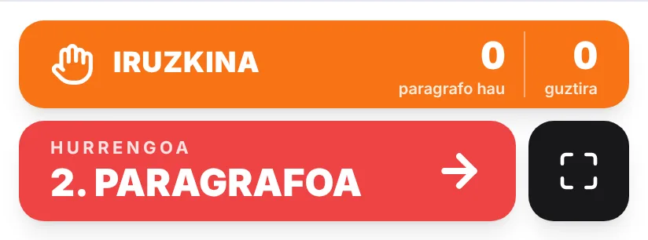
Gorriz: oraindik berreskura daiteke.
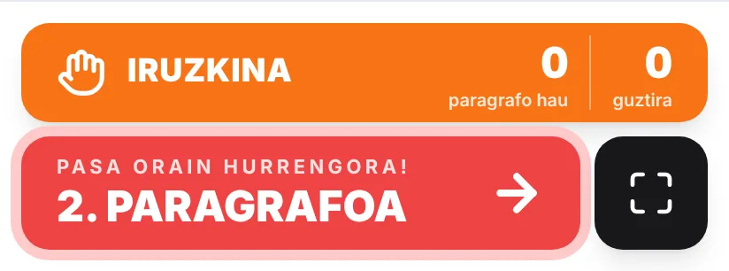
Keinuka: pasa orain hurrengora.
Botoi gorria: zatiak denbora gainditu du, baina falta denean oraindik berreskura daiteke. Hasi iruzkinak ixten.
«Pasa orain hurrengora!» duen botoi gorri keinukaria: ez dago denbora ateratzeko tarterik (falta den galdera bakoitzeko 30 segundo baino gutxiago geratuko lirateke, edo azken 5 minutuetan zaude). Pasa hurrengora ahal bezain laster.
Aurkezpen moduan botoia zuri jartzen da letra gorriekin, edozein atzealde-koloretan ondo ikus dadin.
Nahi ez baduzu, desaktibatu Ezarpenak → Abisuak → «Hurrengoa» botoia gorriz atalean.
9Aurkezpen modua
Azterketa zuzentzeko modu gomendatua da. Behar dena bakarrik erakusten du, letra eta botoi handiekin, eta koloreak begirada batean esaten dizu denboraz nola zoazen.
Beheko ⛶ botoiarekin irekitzen da eta goiko ✕ botoiarekin ixten da (edo mugikorraren «atzera» botoiarekin, aplikaziotik irten gabe).
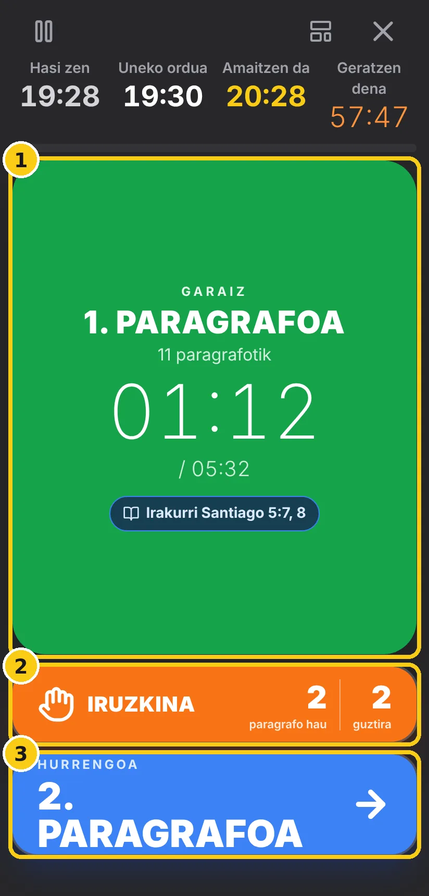
Aurkezpen modua paragrafo batean.
Kolore-koadroa: non zauden (adibidez, 1. paragrafoa), atal horren kronometroa eta aurreikusitako denbora. Berdea, horia edo gorria, nola zoazen kontuan hartuta.
Iruzkina: sakatu norbaitek iruzkin bat egiten duen bakoitzean. Ezkerrean paragrafo honetako (edo galdera honetako) iruzkinak ikusten dituzu eta eskuinean guztirakoak.
Hurrengoa: hurrengo atalera pasatzen da. Botoiak ondoren zer datorren esaten du.
Goian, azterketa zein ordutan hasi zen, uneko ordua, zein ordutan amaitzen den eta zenbat denbora geratzen den ikusten duzu.
Hiru diseinu daude. Goiko ▦ botoiarekin edo Ezarpenak → Pantaila atalean aldatzen dira:
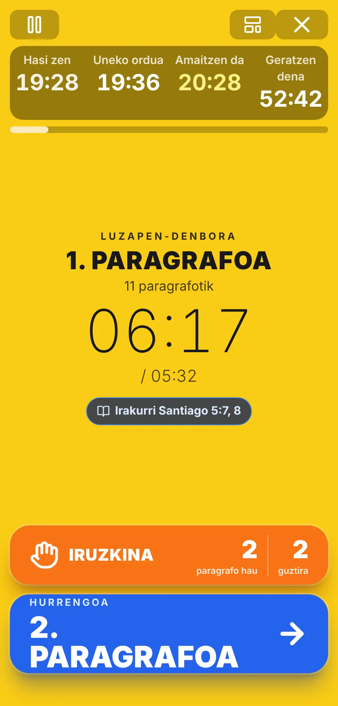
Semaforoa: pantaila osoak kolorea aldatzen du.
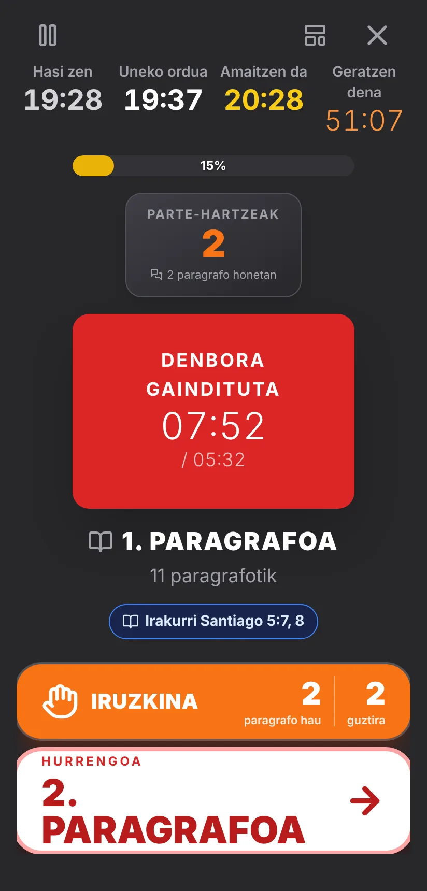
Klasikoa: iruzkin-kontagailuarekin.
Amaieran, botoi handiak «Amaitu azterketa» dio eta, ondoren, «Ikusi txostena».
10Nola kalkulatzen diren denborak
Paragrafo bakoitzaren irakurketa = bere hitzak ÷ irakurketa-abiadura (150, 180 edo 210 hitz minutuko). Bibliako testu, irudi, ohar edo ideia garrantzitsu bakoitzak, gainera, erantzun bakoitzeko denbora gehitzen du (gutxienez 30 segundo; lehenetsia 35) iruzkin gisa, entzuleek irakurtzen edo iruzkintzen dutelako.
Sarrerak eta amaierak Ezarpenetako denbora dute erreserbatuta (minutu bat bakoitzak, lehenetsita). Amaiera amaiera-orduari egokitzen zaio: errepasoa amaitzean denbora soberan badago, dena hartzen du; falta bada, laburtu egiten da.
Iruzkinak: gainerako denbora galdera guztien artean banatzen da. Paragrafo luzeek edo elkartuek pixka bat gehiago jasotzen dute (6. ataleko «gehigarri» berdea).
Azterketan zehar:Hurrengoa sakatzen duzun bakoitzean, geratzen dena berriro kalkulatzen da garaiz amaitzeko.
Adibidea: 11 paragrafo eta 21 galdera dituen 60 minutuko azterketa batean, 7 minutu inguru irakurketarako dira, 2 sarrerarako eta amaierarako, eta 51 inguru iruzkinetarako: galderako 2 minutu pasatxo.
11Ezarpenak
Sakatu ⚙ goian eskuinean. Ezarpenak zure gailuan gordetzen dira eta lau fitxatan antolatuta daude:
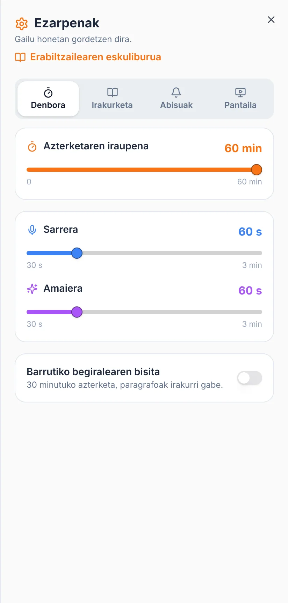
Denbora
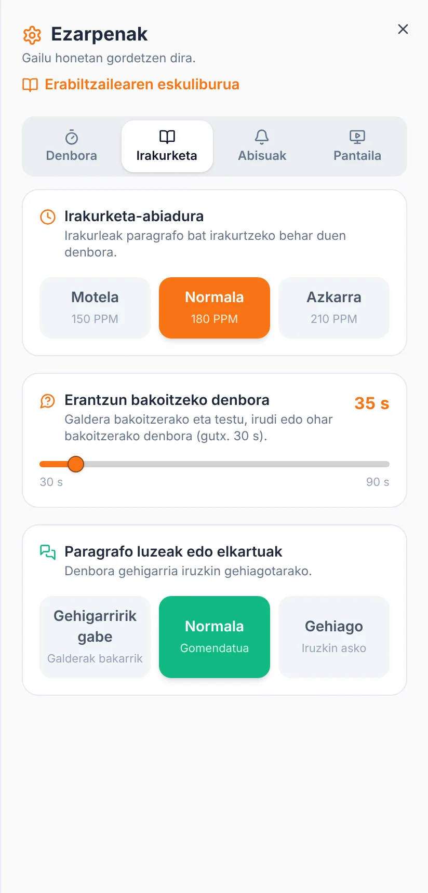
Irakurketa
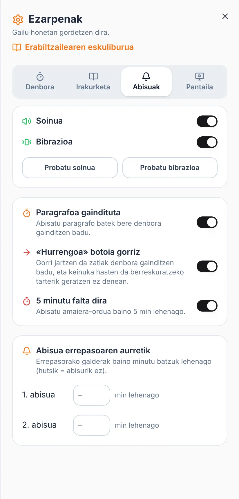
Abisuak
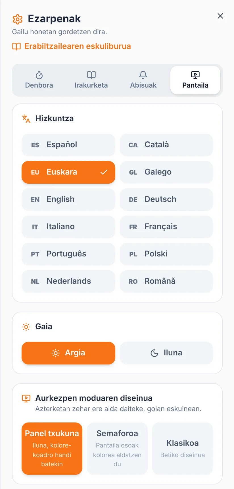
Pantaila
Fitxa
Zer alda dezakezu
Denbora
Azterketaren iraupena (60 min arte). Sarreraren eta amaieraren iraupena (30 s-tik 3 min-era). Barrutiko begiralearen bisita.
Irakurketa
Irakurlearen irakurketa-abiadura: Motela (150), Normala (180) edo Azkarra (210 hitz/min). Erantzun bakoitzeko denbora (30 s-tik 90 s-ra; testu, irudi, ohar edo ideia garrantzitsu bakoitzerako ere erabiltzen da). Paragrafo luzeak edo elkartuak: Gehigarririk gabe, Normala edo Iruzkin gehiago.
Abisuak
Soinua eta bibrazioa (probatzeko botoiekin). Paragrafoa gaindituta abisua, «5 minutu falta dira» abisua eta errepasoaren aurreko bi abisu arte.
Pantaila
Hizkuntza, gai argia edo iluna (iluneko sei aldaerekin: grafitoa, AMOLED beltza, gau-urdina, beroa, baso-berdea eta berenjena) eta aurkezpen moduaren diseinua.
Azterketa martxan dagoela irakurketa-abiadura edo erantzun bakoitzeko denbora aldatzen baduzu, hurrengo azterketan aplikatuko da.
12Soinu- eta bibrazio-abisuak
Paragrafoa gaindituta: martxan dagoen paragrafoak bere denbora gainditzen duenean jotzen du.
5 minutu falta dira: amaiera-ordua baino 5 minutu lehenago, soinuarekin, bibrazioarekin eta pantailako mezu batekin.
Errepasoaren aurretik: idatzi errepasorako galderak baino zenbat minutu lehenago nahi duzun abisua (adibidez, 10 eta 5). Utzi hutsik nahi ez baduzu.
Denbora gutxi errepasorako: errepaso-galderako 20 segundo baino gutxiago geratzen badira, aplikazioak ohartarazten dizu.
«Hurrengoa» botoia gorriz: aurrera egiteko botoia gorri jartzen da zatiak denbora gainditzen duenean, eta keinuka hasten da berreskuratzeko tarterik geratzen ez denean (8. atala).
Abisuak entzun nahi badituzu, egiaztatu mugikorra isilik ez dagoela. Bibrazioak Android-en funtzionatzen du; iPhone-n nabigatzailearen araberakoa da.
13Barrutiko begiralearen bisita
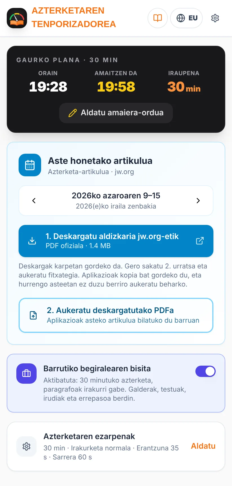
Etengailua aktibatuta: 30 minutuko azterketa.
Bisitaren astean, aktibatu «Barrutiko begiralearen bisita» etengailua hasierako pantailan (edo Ezarpenak → Denbora atalean). Azterketak 30 minutu irauten ditu eta paragrafoak ez dira irakurtzen: galderak, Bibliako testuak, irudiak eta errepasoa mantentzen dira. Gogoratu bisitaren ondoren desaktibatzea.
Aste horretan ez dago paragrafoaren irakurketarik. Paragrafo bakoitzaren aurreikusitako denboran, irakurtzeko testuak, irudiak eta oharrak iruzkinen barruan agertzen dira, adibidez «Irakurtzeko testua» edo «Iruzkintzeko irudia» (pluralean bat baino gehiago badago).
14Hizkuntzak
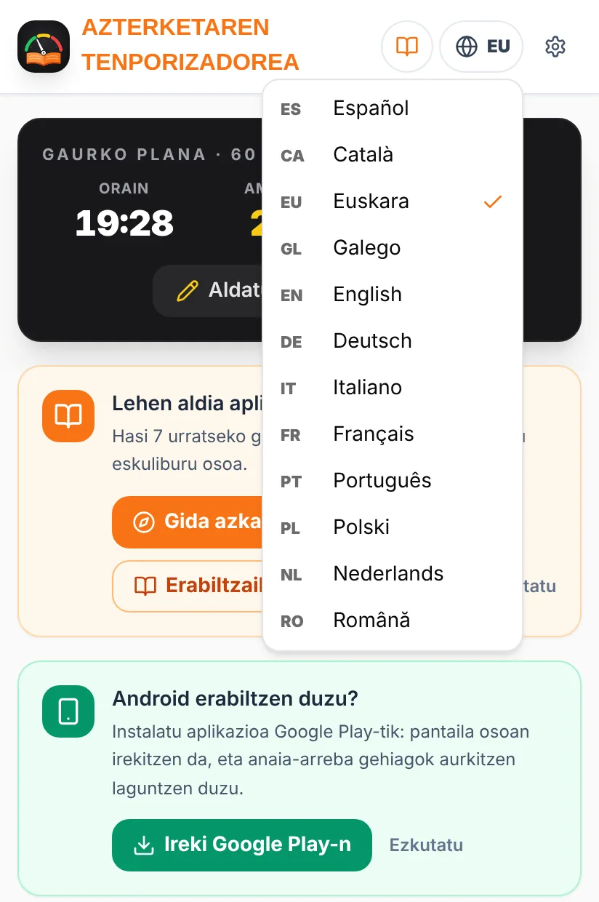
Hizkuntzaren menua.
Aplikazioak hizkuntza hauetan funtzionatzen du: gaztelania, katalana, euskara, galegoa, ingelesa, alemana, italiera, frantsesa, portugesa, poloniera, nederlandera eta errumaniera. Aldatu goiko globoaren botoiarekin edo Ezarpenak → Pantaila atalean. Hizkuntza aldatzean:
Aplikazio osoa hizkuntza horretan agertzen da, bere data eta orduekin.
jw.org-eko botoiak Zaintza Dorrea hizkuntza berean deskargatzen du. Aplikazioaren hizkuntzak erabakitzen du aldizkariaren hizkuntza.
Portugesez, aplikazioak behin galdetzen dizu Portugalgo ala Brasilgo edizioa nahiago duzun. Gero alda dezakezu Ezarpenak → Pantaila atalean.
Eskuliburu hau hizkuntza horietan guztietan dago eskuragarri: erabili goiko hizkuntza-botoiak.
15Amaitzean: txostena eta historia
«Amaitu azterketa» sakatzean, aplikazioak atal bakoitzaren denborak dituen txosten bat gordetzen du. Zer luzatu den ikusteko eta hurrengoan hobetzeko balio dizu.
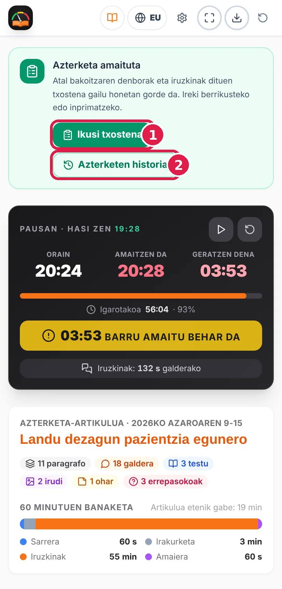
Goian «Azterketa amaituta» txartela agertzen da.
Ikusi txostena: azterketa honen txostena beste fitxa batean irekitzen du.
Azterketen historia: gordetako azterketa guztien zerrenda irekitzen du.
Txostena
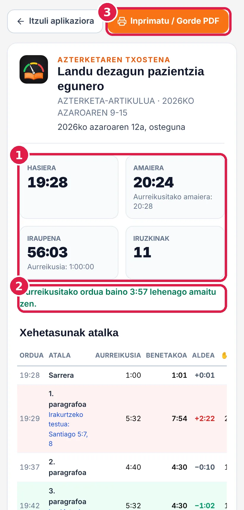
Txostenaren goiko aldea.
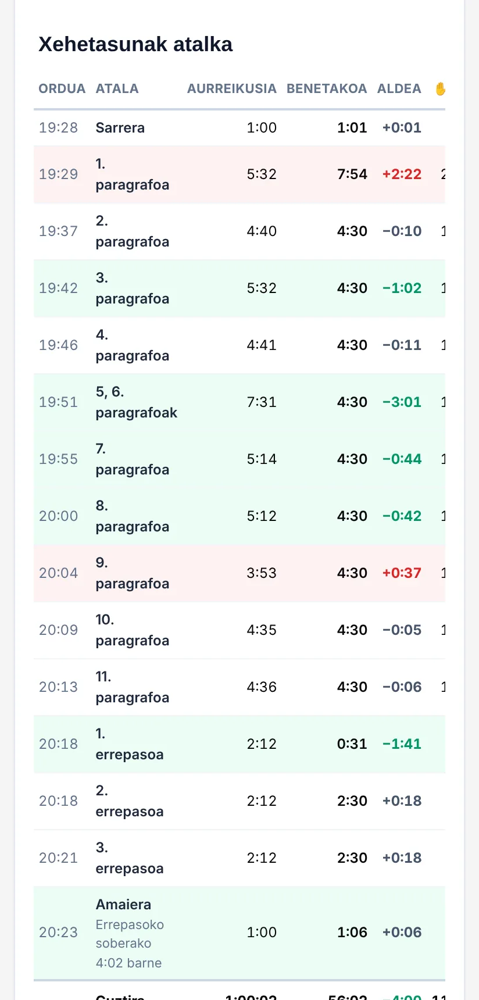
Atal bakoitza duen taula.
Azterketaren hasiera, amaiera eta iraupena, aurreikusitako amaiera-orduarekin eta iruzkinen guztizkoarekin.
Esaldi bateko laburpena, adibidez «Aurreikusitako ordua baino 3:57 lehenago amaitu zen» (berdez) edo «beranduago» (gorriz).
Inprimatu / Gorde PDF: paperean inprimatzeko edo fitxategi gisa gordetzeko.
Taulak errenkada bat du atal bakoitzeko: sarrera, paragrafo bakoitza, errepaso-galdera bakoitza eta amaiera. Errenkada bakoitzean hau ikusiko duzu:
Atal hori zein ordutan hasi zen.
Aurreikusia eta Benetakoa: planeko denbora eta benetan erabili zena.
Aldea:berdez azkarrago joan bada eta gorriz luzatu bada.
✋: markatutako iruzkinak.
Ordenagailuan eta inprimatzean paragrafo bakoitzaren hitzak eta galderak ere agertzen dira. Inprimatutako txostena orri batean sartzen da.
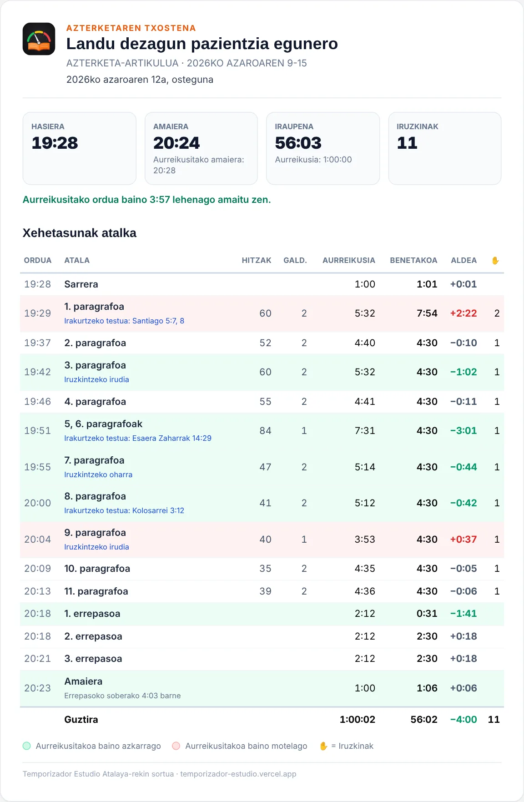
Txosten osoa, ordenagailuan edo inprimatuta ikusten den bezala.
Sakatu azterketa bat haren txostena ikusteko. Data, orduak, iraupena eta iruzkinak erakusten dira.
Zakarrontzia: txosten bat ezabatzeko. Sakatu behin eta gero berretsi «Ezabatu?» botoiarekin.
Txostenak gailu honetan bakarrik gordetzen dira, inoiz ez interneten. 100 azterketa arte gordetzen dira. Nabigatzailearen edo aplikazioaren datuak ezabatzen badituzu, historia galdu egiten da.
Historia hasierako pantailaren amaierako «Azterketen historia» estekatik ere ireki dezakezu.
Beste aukera batzuk
Planaren azpian paragrafo bakoitzaren denbora-estatistikak ere agertzen dira.
Goiko esportatu⬇ botoiarekin azterketaren plana irudi edo PDF gisa gorde dezakezu.
Beste azterketa bat prestatzeko, sakatu berriro hasi↻.
16Ohiko galderak
Zuzendu al dezaket aplikazioko paragrafoak eta galderak irakurriz?
Ez. Aplikazioak denborak kalkulatzeko bakarrik erakusten ditu. Zuzentzeko, erabili beti JW Library edo Zaintza Dorrea aldizkari inprimatua.
Zergatik deskargatu da Zaintza Dorrea beste hizkuntza batean?
Aldizkaria aplikazioaren hizkuntzan deskargatzen da. Aldatu hizkuntza globoaren botoiarekin eta sakatu berriro «Deskargatu aldizkaria jw.org-etik».
Artikuluaren formatua ezagutzen ez duela dio.
Erabili Zaintza Dorrearen azterketa-edizioaren PDF ofiziala, jw.org-etik deskargatua («Deskargatu aldizkaria jw.org-etik» botoiak egiten du zure ordez). PDF eskaneatuak edo pantaila-argazkiekin egindakoak ezin dira irakurri.
Ez du asteko artikulua aurkitzen aldizkariaren barruan.
Egiaztatu aukeratutako astea aldizkariaren zenbaki horri dagokiola. Hala ez bada, aplikazioak hurbilen dagoen artikulua erakusten du eta beste aste bat aukeratzen uzten dizu.
Internet behar al dut azterketan zehar?
Aldizkaria deskargatzeko bakarrik. Artikulua kargatu ondoren, tenporizadoreak konexiorik gabe funtzionatzen du.
Berandu iritsi naiz edo atzerapenarekin hasi naiz. Zer egin?
Ireki zoazten paragrafoa eta sakatu «Hasi hemendik». Aplikazioak geratzen den denbora banatuko du.
Hitzaldi publikoa berandu amaitu da.
Hasi aurretik, sakatu «Aldatu amaiera-ordua» eta idatzi azterketak amaitu behar duen ordua, bilera garaiz amai dadin. Aplikazioak dena laburtzen du ordu horretan amaitzeko. Aukera honek azterketa laburtu bakarrik egiten du: ez du inoiz luzatzen.
Abisuek ez dute jotzen.
Begiratu Ezarpenak → Abisuak atalean aktibatuta daudela, sakatu «Probatu soinua» eta egiaztatu mugikorra isilik ez dagoela.
Zer datu gordetzen ditu aplikazioak?
Zure ezarpenak eta gordetzea aukeratzen dituzun aldizkariak bakarrik, eta beti zure gailuan. Ez dago konturik eta ez da daturik bidaltzen inongo zerbitzarira. Informazio gehiago pribatutasun-politikan.
Non ikusten ditut beste asteetako azterketak?
Azterketen historian: sakatu «Azterketen historia» azterketa bat amaitzean edo hasierako pantailaren amaierako estekan.
Txosten bat ezabatu al dezaket?
Bai. Historian, sakatu azterketaren zakarrontzia eta gero berretsi «Ezabatu?» botoiarekin.
Zergatik iraun du amaierak aurreikusitakoa baino gehiago?
Errepasoa amaitzean denbora soberan badago, amaierak denbora hori hartzen du garaiz amaitzeko. Txostenak «Amaiera» azpian adierazten du.